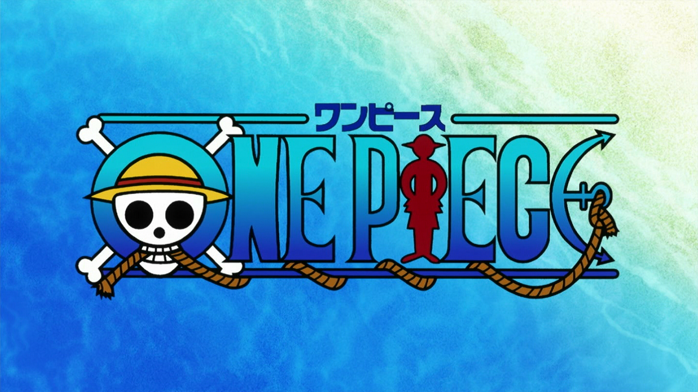

One Piece

SINOPSE
- One Piece é uma das séries de anime e mangá mais populares do mundo, criada por Eiichiro Oda. A história é ambientada em um mundo vasto e repleto de ilhas e mares, onde piratas e caçadores de tesouros são comuns. O objetivo de muitos desses piratas é encontrar o One Piece, o lendário tesouro deixado por Gol D. Roger, o Rei dos Piratas, cuja última vontade antes de sua execução foi revelar que o maior tesouro do mundo estava escondido em algum lugar do Grand Line, uma área perigosa e misteriosa do oceano.